NASA Space Apps 2026 · open source
MOCHIA Little More Than a Pet.
A little companion that lives on your desktop, gets to know you, plays with you, helps you reflect, and quietly brings people together.
Built for astronauts on long missions. Not another health dashboard: a friend on your screen, with an explainable wellbeing intelligence one click behind it.
Free and open source · runs locally · demonstration with synthetic health data · not a medical device
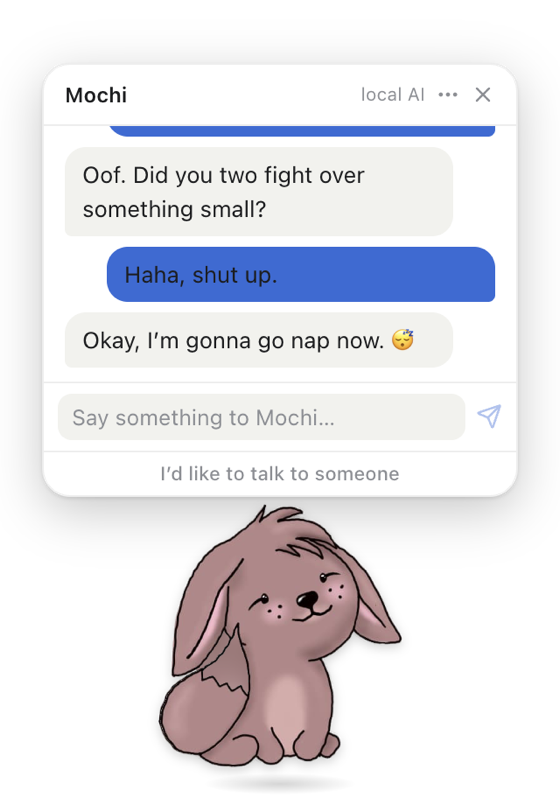
Right-click Mochi → Open Dr G ZeroReal capture: Mochi and its chat window float above your other apps. Replies come from a model running on your own computer.
Dr G Zero thinks. Fable connects. Mochi brings it to life.
Mochi
Companion and interaction layer: chat, play, journal, memory, gentle suggestions.
Dr G Zero
SCND intelligence: personal baselines, data quality, analysis, recommendations and safety.
Fable
Coordination between crew members’ companions, for activities people opt into.
Everything runs on your computer. Conversations, journals and health data stay local.
Meet Mochi
A friend that lives on your desktop
Mochi isn’t a chatbot hidden inside an app. It sits above whatever you’re working on: click it to chat, drag it anywhere, hide it whenever you like.
- Talks in short, natural replies, powered by a small model running on your own computer
- Listens when invited, and backs off when you want space
- Helps you reflect with a private journal: your words, editable, never shared and never sent to the model
- Remembers only what you confirm, and you can delete it
- Plays quick memory and reaction games
- Opens your dashboard when you ask: “Mochi, show me my health”
- Knows its limits: it never diagnoses, and “I’d like to talk to someone” is always one tap away
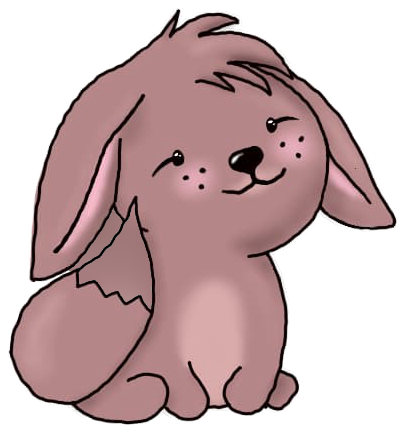
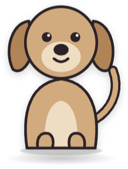
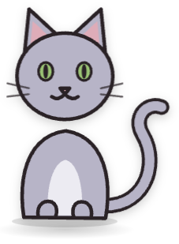
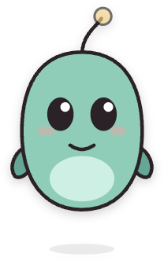
Every crew member gets their own companion. Mochi is original team artwork; the other three are original placeholder designs, to be redrawn.
Meet Dr G Zero
The intelligence behind the companion
Dr G Zero compares each astronaut with their own baseline, not population norms, and explains every result. Its SCND engine (Sustained Change, Not Diagnosis) is deterministic and auditable. The language model only words things; it never decides.
Physical wellbeing
Resting heart rate, heart-rate variability, blood oxygen, sleep and activity, with long-term trends and deviations from your own baseline.
Mental wellbeing
Voluntary check-ins on mood, stress, fatigue, sleep quality, social connection and cognition. Sustained patterns only, never a diagnosis.
- Data collection
- Personal baseline
- Data quality
- Statistical detection
- SCND decision
- Recommendation
- Mochi says it kindly
Sustained, multi-domain change from your baseline, confirmed over 3 days. A private conversation is suggested; you decide whether to share.
No sustained change in the reliable data. It doesn’t confirm wellbeing; support is always available.
Not enough reliable data to say anything. Dr G Zero won’t guess.
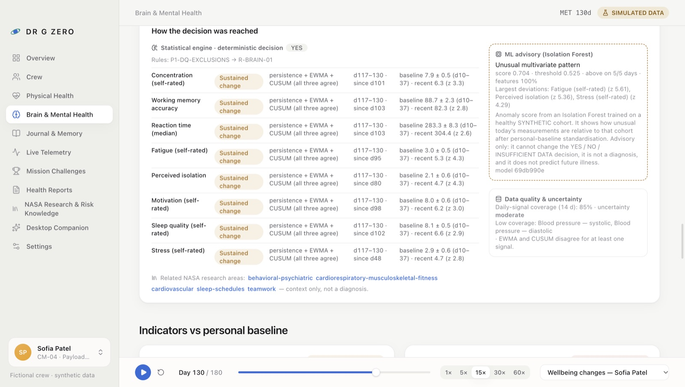
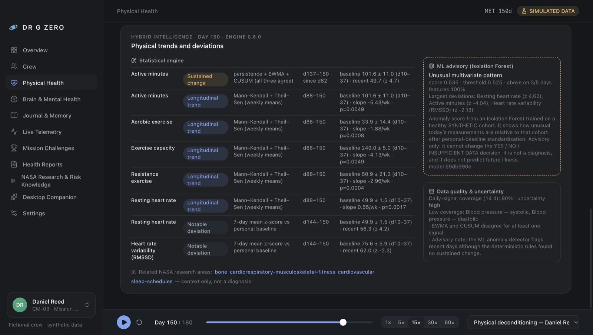
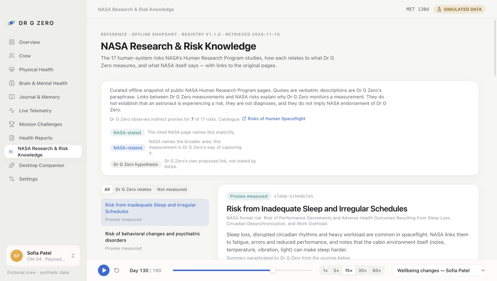
All astronaut data in the demonstration is synthetic (five fictional crew members). Thresholds are engineering defaults, not clinical thresholds, and the engine has not been clinically validated. Dr G Zero is not a medical device and does not diagnose.
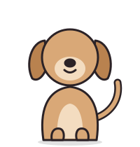
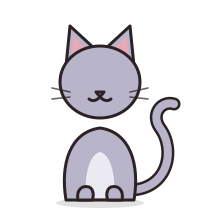
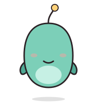
Puzzle at 19:00? Maya’s in! Sofia: open to a gameMeet Fable Planned
Companions that help the crew get together
Every astronaut has their own companion. Fable lets those companions coordinate activities people have agreed to: a puzzle night, a shared meal, group exercise. It coordinates activities, not surveillance.
- Companions share intents, never journals, conversations, health data or emotional state
- No one is labelled, ranked or inferred about
- “Personal space” means never invited
- Opt out of any activity, or switch Fable off entirely
Available today: voluntary crew statuses, activity invitations between companions, shared crew puzzles and a team expedition, all on one computer and shown as crew totals. Planned: the full Fable layer, including coordination between separate computers.
Play
Healthy routines, made fun
Progress comes from taking part: check-ins, prescribed exercise, rest, recovery, connection and play. Rest is never punished. Health metrics are never scores. Nothing is ever taken away.
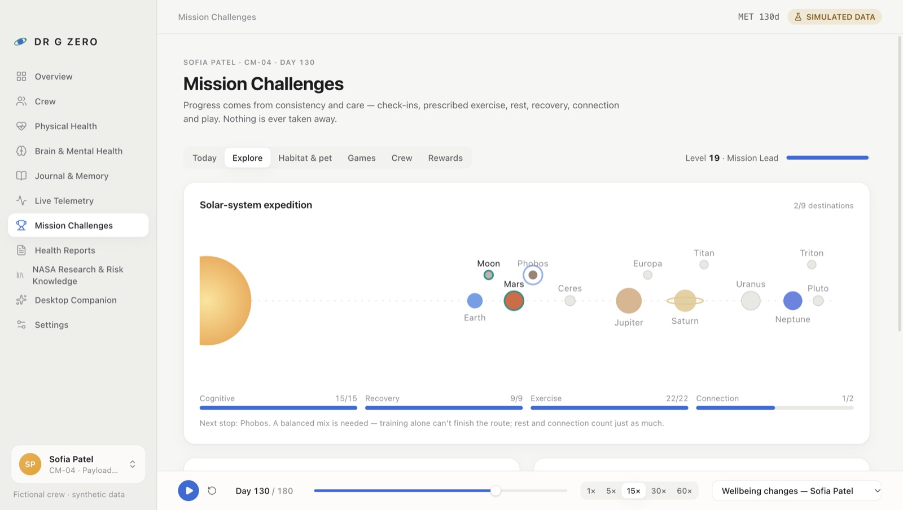
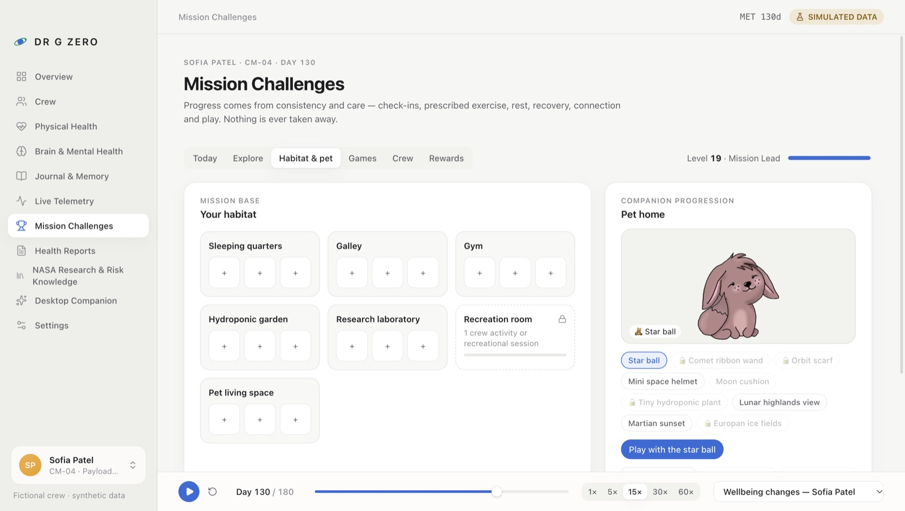
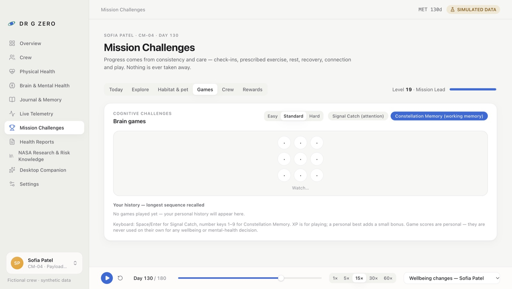
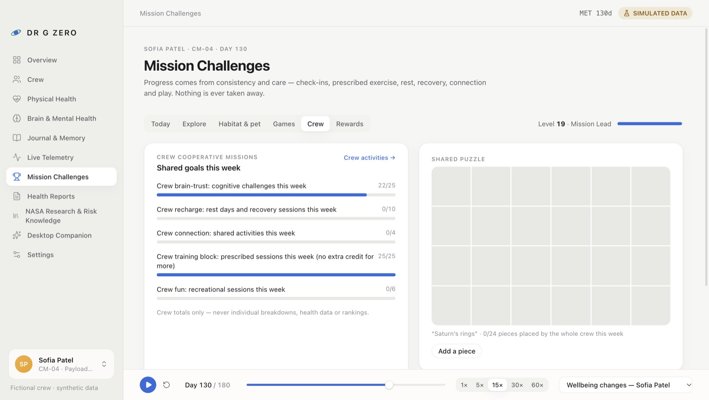
See it running
Real screenshots, light and dark
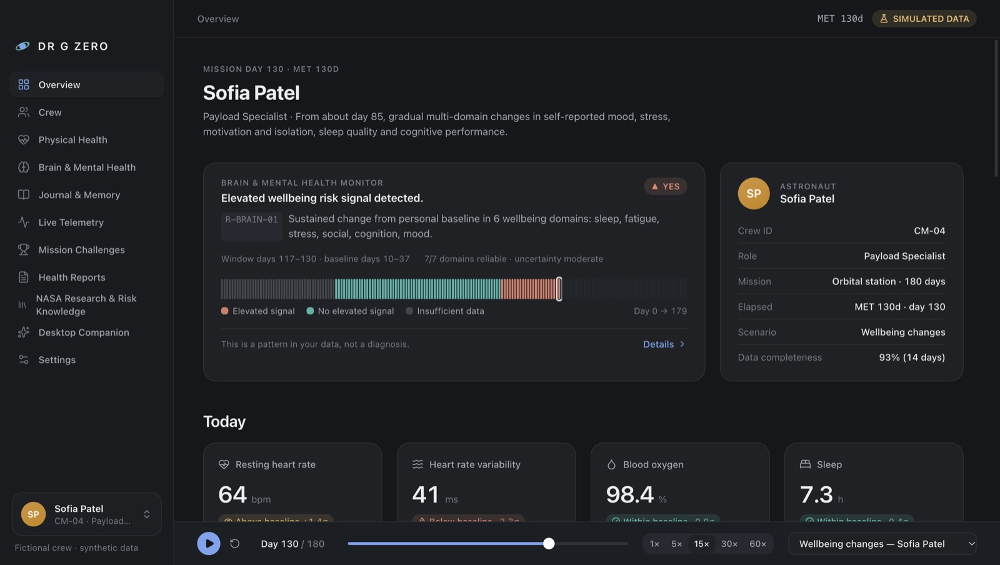
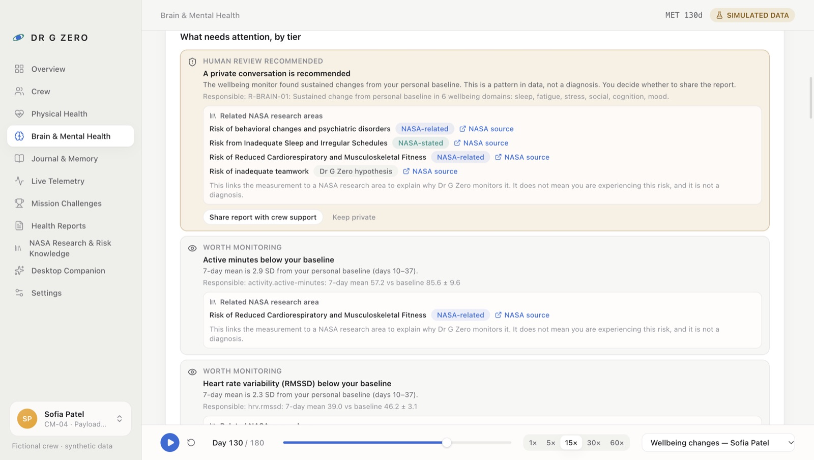
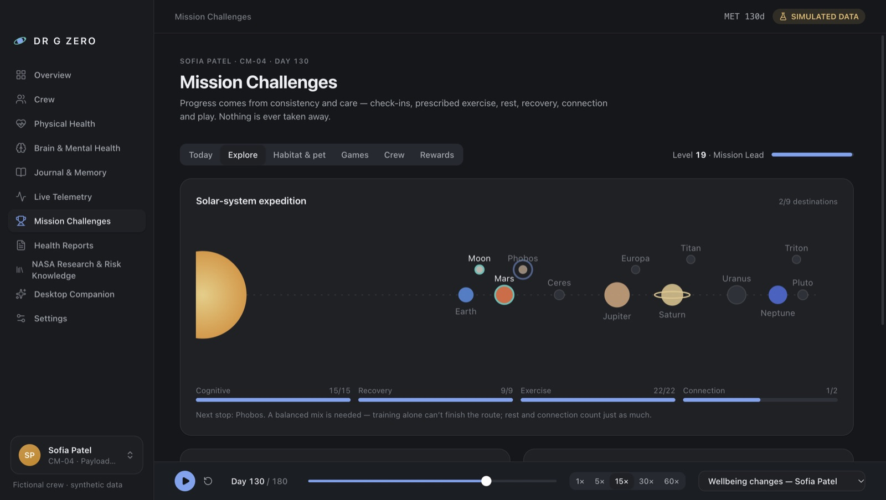
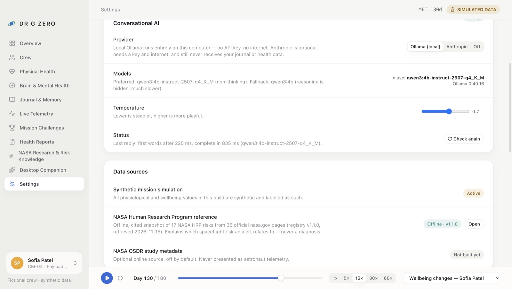
Captured from the running app with the synthetic demonstration crew.
Download
Meet your own Mochi
Installers are published on the Releases page. They are unsigned demonstration builds, so your system will ask you to confirm the first launch.
macOS
macOS 12 or later
- Download the Apple Silicon (M1 and later) or Intel disk image.
- Drag Mochi to Applications.
- First launch: System Settings → Privacy & Security → Open Anyway.
Windows
Windows 10/11 · 64-bit · Experimental
- Download the installer (
.exe). - If SmartScreen appears: More info → Run anyway.
- Follow the installer.
Built and smoke-tested automatically on Windows in CI. Not yet tested on a real Windows PC.
Local AI
Optional, but this is how Mochi really talks
- Install Ollama (free).
- Mochi’s first-run guide offers to download Qwen3 4B: about 2.5 GB, only after you confirm.
- Uses about 3.2 GB of memory while chatting. 8 GB RAM and 4 GB free disk recommended.
No model is bundled in the installer. Without one, Mochi runs in a clearly labelled simple mode.
Project & research
Open, documented, honest
Mochi was built for the NASA Space Apps Challenge 2026 (Create Health Monitoring Software for Astronauts on Space Missions). The architecture, the SCND engine, its evaluation on held-out synthetic data, and the privacy design are all documented.
What works today
- Available Desktop companion · local AI chat · journal & memory · Dr G Zero SCND · physical and mental wellbeing monitoring · NASA risk knowledge · gamification · macOS installers
- Experimental Windows installer (untested on real Windows) · slower fallback model · optional Anthropic provider (off by default)
- Planned Full Fable coordination across computers · signed installers · real sensor integrations